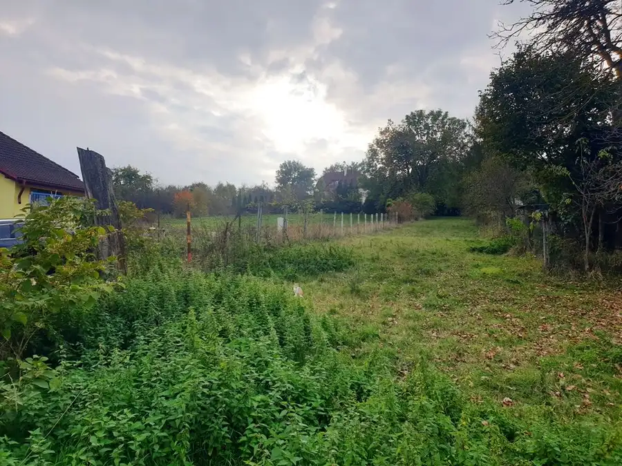
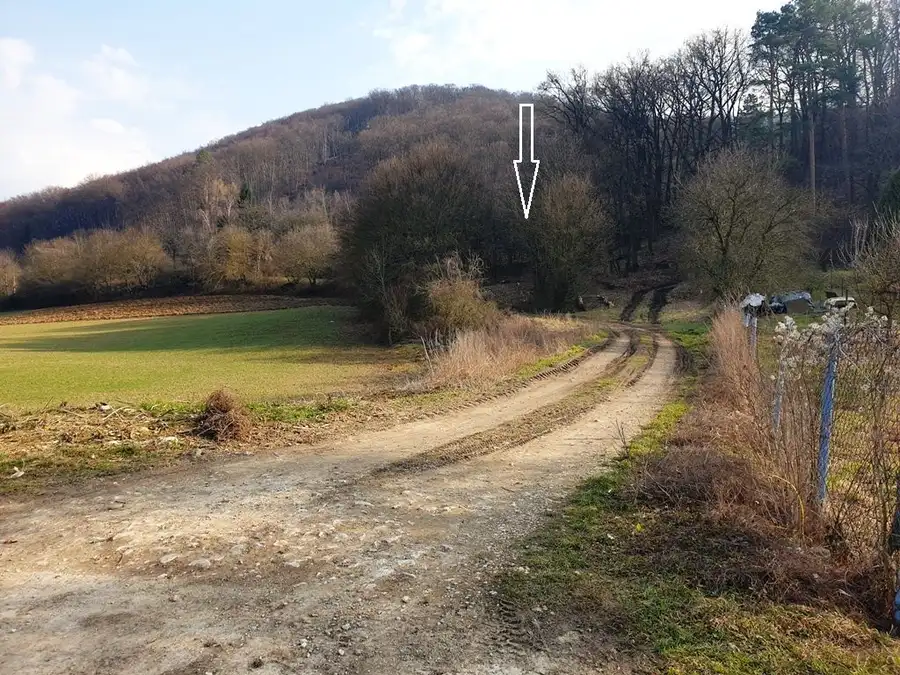

Investičný projekt pripravený pre výstavbu RD - 4x pozemok + 1x RD
Stará Turá
- Plocha4137 m²
- Vlastníctvoosobné
O nehnuteľnosti
Naša realitná kancelária Vám ponúka investičný projekt pripravený pre výstavbu rodinných domov na pozemku o celkovej výmere 4137 m2 v obci Stará Turá, okres Nové Mesto nad Váhom.
Jedná sa o budúcu novovybudovanú domovú štvrť vo vnútrobloku s vlastnou prístupovou cestou, kde súčasťou je aj samostatne stojací rodinný dom z prednej strany pozemku.
Celková dĺžka pozemku - 85 m.
Celková šírka pozemku - 50 m.
Na pozemku vo vnútrobloku je už vybudovaná a skolaudovaná hlavná elektrická rozvodná skriňa s kapacitou elektriny pre 10 samostatných bytových jednotiek.
Na začiatku ihneď za hranicou pozemku je už vybudovaná hlavná prípojka vodovodu a verejnej kanalizácie.
Na prístupovú cestu, verejné osvetlenie, obecný vodovod a kanalizáciu je už vydané právoplatné stavebné povolenie.
Samostatne stojací RD :
Zastavaná plocha - 193 m2
Celková výmera pozemku - 719 m2
Rodinný dom bol postavený a skolaudovaný v roku 1985 a je pripojený na všetky inžinierske siete - elektrina, plyn, obecný vodovod, verejná kanalizácia.
Stavba je postavená na železobetónových základoch, murivo vybudované z klasickej pálenej tehly, strecha je po rekonštrukcií, ktorá prebehla v roku 2010 a je postavená z klasických drevených trámov s betónovou strešnou krytinou.
Rodinný dom je inak v pôvodnom stave, určený na kompletnú rekonštrukciu.
Dispozícia stavby :
- vstup
- predsieň
- kuchyňa
- 6x obytná miestnosť
- 1x kúpelňa
- 3x WC
Stavba bola v minulosti využívaná na trvalé bývanie, momentálne slúži ako ubytovanie.
Výhodou je možnosť prestavby na viacero bytových jednotiek alebo na malú radovú výstavbu.
Stavebný pozemok č. 1 - 672 m2
Stavebný pozemok č. 2 - 727 m2
Stavebný pozemok č. 3 - 756 m2
Stavebný pozemok č. 4 - 695 m2
Cena nehnuteľnosti je rozpočítaná tak, že cena samostatného rodinného domu s priľahlým pozemkom 719 m2 je v sume 110 000€ a 4 stavebné pozemky s vlastnou prístupovou cestou sú za cenu 380 000€.
K dispozícií je aktuálna platná územnoplánovacia informácia od obce Stará Turá, kde sú spomenuté všetky možnosti a regulatívy výstavby v danej lokalite.
Nehnuteľnosť je právne vysporiadaná, bez akýchkoľvek tiarch a exekúcií, ihneď k odkúpeniu.
Viac informácií o nehnuteľnosti Vám radi poskytneme na tel.č. alebo na mail adrese kde si môžete s maklérom dohodnúť aj fyzickú obhliadku nehnuteľnosti.
V cene nehnuteľnosti je: - kompletný servis spojený s ponukou, predajom, prevodom nehnuteľnosti, - vyhotovenie kúpnej zmluvy a návrhu na vklad kúpnej zmluvy - uhradenie správneho poplatku za návrh na vklad kúpnej zmluvy do katastra nehnuteľností - uhradenie poplatku za osvedčenie podpisov na kúpnej zmluve - poradenstvo / HU - zabezpečený nehnuteľnosťou.
Predávate/kupujete svoju nehnuteľnosť sám, ale netrúfate si na všetky fázy realitného obchodu? Radi Vám pomôžeme tam, kde si nie ste istý.
Na skoré stretnutie s Vami sa teší náš tím - VAŠE REALITY s.r.o. - člen Realitnej Únie Slovenskej republiky
Parametre
| Rozloha pozemku | 4137 m² |
|---|---|
| Poschodie | neuvedené |
| Vlastníctvo | osobné |
| Odvoz odpadu | áno |
| Voda | verejný vodovod |
| El. napätie | 230/400V |
| Plyn | áno |
| Kanalizácia | áno |
| Inžinierske siete | áno |
| Terén | mierny svah |
| Prístupová cesta | asfaltová cesta |
| Dátum zverejnenia | 30. 10. 2024 |
Kde to je
Mohlo by Vás zaujímať
 Pozemok7
86 875 €Stavebný pozemok o výmere 695 m2 v súkromnej štvrti - Stará Turá
Stará Turá
695 m²
Realitná kancelária Vaše Reality Vám ponúka na predaj stavebný pozemok s výmerou 695 m², nachádzajúci sa v novovybudovanej súkromnej štvrti v obci…
Pozemok7
86 875 €Stavebný pozemok o výmere 695 m2 v súkromnej štvrti - Stará Turá
Stará Turá
695 m²
Realitná kancelária Vaše Reality Vám ponúka na predaj stavebný pozemok s výmerou 695 m², nachádzajúci sa v novovybudovanej súkromnej štvrti v obci…

Pozemok7 88 000 €Stavebný pozemok o výmere 704 m2 v súkromnej štvrti - Stará Turá Stará Turá 704 m² Realitná kancelária Vaše Reality Vám ponúka na predaj stavebný pozemok s výmerou 704 m², nachádzajúci sa v novovybudovanej súkromnej štvrti v obci…
Pozemok10 34 170 €Rekreačný pozemok pri lese 1139 m2 - Trenčianske Bohuslavice Trenčianske Bohuslavice 1139 m² Realitná kancelária Vaše Reality ponúka na predaj rekreačný pozemok o výmere 1 139 m², nachádzajúci sa na pokojnom mieste na okraji lesa v obci…